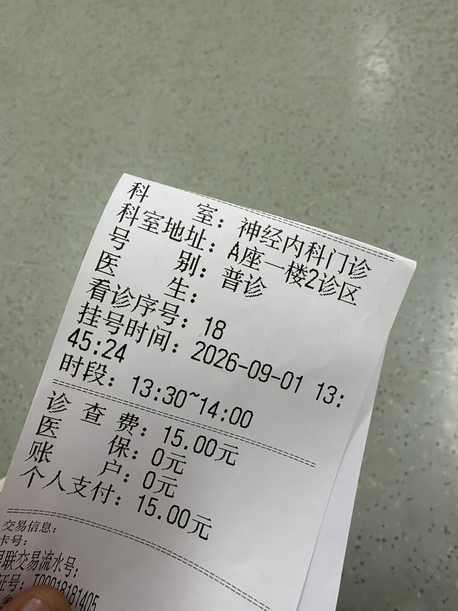

池鱼鱼🍥
@Chiyuyu520
需要医生给你开神经痛的诊断，这是最快速的，如果靠焦虑来开限制条件苛刻
1.你需要遇到一个愿意负责你的医生，不会把你打发到精神科
2.医生敢超说明书用药，这个跟医生和医院都有关系，因为容易被罚出事
3.医生认为你确实需要这个药，给你没有显著风险，有滥用风险不会开给你的
4.你的地区对此药不敏感

徐小天🏳️⚧️🍥
@9mxrbj
@Chiyuyu520 15岁 能不能单独首次开出来啊 我有重度自杀倾向 中度抑郁症中度焦虑症中度狂躁症轻度躯体化就是能不能单独的去开下来